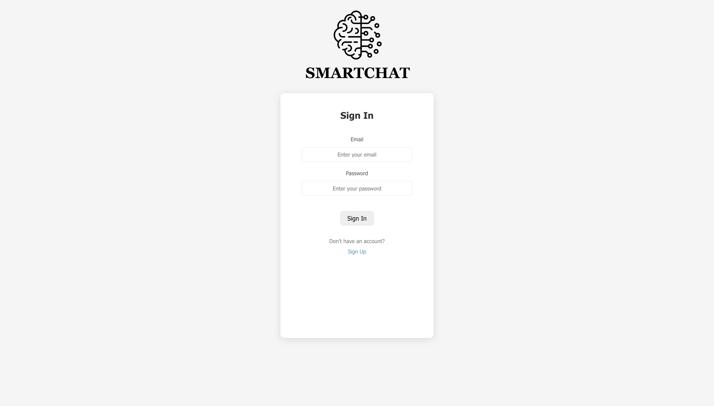
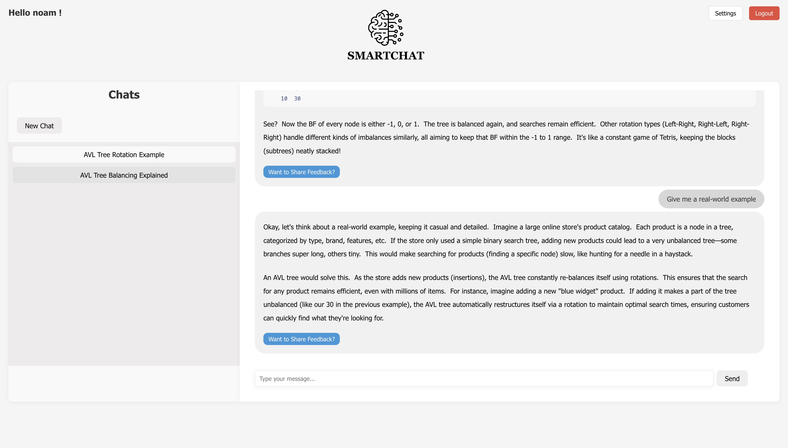
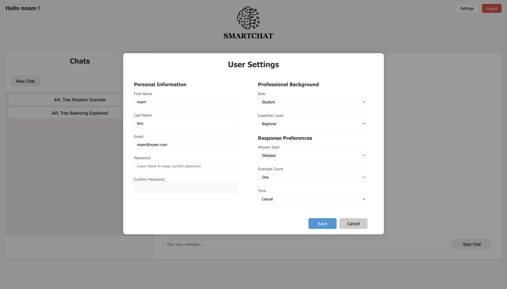
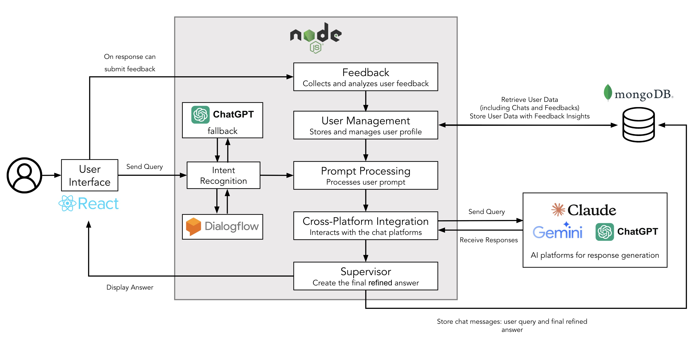

Description
Conversational AI platform that integrates multiple AI services to deliver high-quality, personalized interactions in real time. Built with Node.js, supporting multi-platform evaluations and dynamic chat sessions.
Developed as part of a Software Engineering B.Sc. Final Project.
Technologies Used
- Node.js
- Express
- React
- CSS
- MongoDB
- Socket.io
- APIs
Introduction
In the era of advanced AI language models, users often turn to platforms like ChatGPT, Claude, and Gemini to obtain support in learning and problem-solving — especially in complex, technical fields such as software engineering. While these platforms are powerful individually, each operates in isolation, requiring users to evaluate and compare responses on their own. This fragmented experience may lead to inefficiencies, inconsistencies, and a lack of personalization. SmartChat is an intelligent chat interface designed to address these challenges by combining the strengths of multiple AI platforms into a single, unified system. The project aims to deliver accurate, relevant, and personalized answers tailored to each user's unique profile, level of expertise, and feedback history. SmartChat allows users to submit queries or requests, which are then processed through an advanced prompt-engineering mechanism. The refined prompt is sent to three separate AI agents — ChatGPT, Claude, and Gemini — and the resulting responses are evaluated and compared using structured criteria such as relevance, accuracy, and clarity. The system then selects and delivers the most suitable answer, optimizing both the user experience and the quality of the information provided.
Project Screenshots
  Project Architecture
Project Book
You can view my SmartChat project book: View Project Book
Project Link
You can view my SmartChat project on GitHub:
🚀 Live Preview: SmartChat